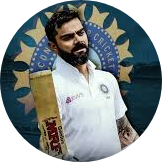

|  |
Virat KohliIndia
|
|---|
|
|
|---|
| Test | ODI | T20 | ||
|---|---|---|---|---|
| Batting | 5 | 2 | 5 | |
| Bowling | -- | -- | -- |
| Teams | India, Delhi, India Red, India U19, Royal Challengers Bangalore, Board Presidents XI, North Zone, Indians, India A, Asia XI |
Profile
A spunky, chubby teenager with gelled hair shot to fame after leading India to glory in the Under-19 World Cup at Kuala Lumpur in early 2008. In an Indian team filled with saint-like icons worthy of their own hagiographies, Virat Kohli, with his most un-Indian, 'bad-boy' intensity, would clearly be an outcast.